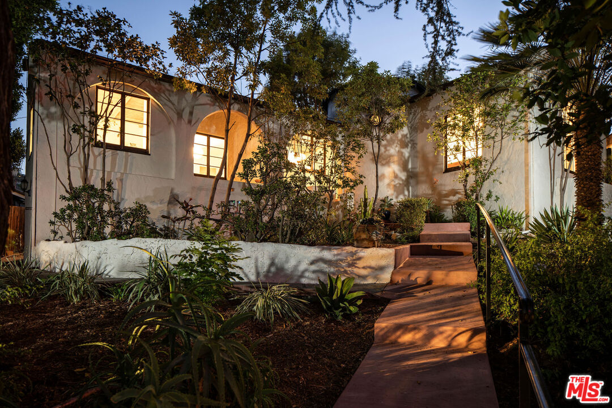

Studio
City

- Sunday ritual
- Farmers market
- Walk Score
- 65 / 100
- Neighborhood spine
- Ventura Boulevard
- Named
- 1927–28
Walkability via Walk Score. The Studio City Farmers Market runs Sundays on Ventura Place; hours can change, so check before visiting.
Studio City Real Estate Agent
A neighborhood built around a studio—and the life that grew beyond it.
Studio City sits where the southeast Valley meets the hills. Ventura Boulevard carries the restaurants, coffee, shops, and useful daily stops; a few turns away, the streets become quieter, greener, and more residential.
The Sunday farmers market brings the neighborhood together on Ventura Place, but the boulevard’s real signature is its food culture—especially the run of sushi restaurants that has shaped Studio City for decades.
The honest tradeoff is that the experience changes block by block. Ventura can feel lively and walkable; the hills offer privacy and views but bring steeper roads, more driving, and addresses you should experience in person.
Let me give you a tourRow
Ventura Boulevard · after the cameras stop
Why Ventura Boulevard eats better than it has any right to.
Every neighborhood has a street that explains it, and in Studio City that street is Ventura Boulevard—specifically the stretch food writers call Sushi Row. It has been widely described as having the highest concentration of sushi restaurants in the world outside Tokyo.
Teru Sushi opened here in 1979 with a koi pond out front and a bet that the nearby studio crowd wanted something better than the expected post-work dinner. It is still here nearly five decades later. Sushi Katsu-ya followed in 1997, and the crispy rice with spicy tuna created there is now served around the world.
A neighborhood built around a movie studio ended up known just as much for what happens on Ventura after the cameras stop rolling.
Plan a Sushi Row nightWhere in LA is Studio City?
Studio City sits in the southeast San Fernando Valley, just west of the Cahuenga Pass. Sherman Oaks is to the west, North Hollywood and Toluca Lake are to the east, and the Hollywood Hills and Mulholland Drive rise along the south.
Laurel Canyon Boulevard and Coldwater Canyon Avenue are the main routes south over the hills. Ventura Boulevard anchors daily life, while the 101 connects the northern edge of the neighborhood to the rest of the Valley.
The useful distinction: living near Ventura is a different rhythm from living in the hills. The first prioritizes walkability and convenience; the second trades some of that ease for views, quiet, and privacy.
Places I send people.
Three different versions of a Studio City night—or afternoon.
Swipe to browse the places

Teru Sushi
The original Sushi Row anchor: open since 1979, with a traditional garden entry, koi pond, and a room that still feels connected to the boulevard’s history.

Firefly
My real pick when I want something really yummy without making dinner complicated: a library-style lounge, a huge candlelit patio, intimate cabanas, and a see-through fireplace.

The Shops at Sportsmen’s Lodge
Big, open, and genuinely family-friendly—a place where kids have room to move while the adults grab coffee, lunch, or a glass of wine.
Schools in and around Studio City
Carpenter Community CharterPublic · K–5 · School site
Walter Reed Middle SchoolPublic · 6–8 · School site
North Hollywood High SchoolPublic · 9–12 · School site
Harvard-Westlake SchoolPrivate · 7–12 · School site
School assignments and program eligibility depend on the exact property address and may change. Verify a specific home through the LAUSD School Directory; private-school admission is separate.
Parks & outdoor time
Swipe to browse the parks

Wilacre Park
A 128-acre natural park at the lower trailhead of the Betty B. Dearing Trail, with picnic space, hillside views, and a quick way into the mountains.

Photo: Joe Mabel / CC BY-SA 4.0.
Fryman Canyon Park
The upper trailhead for the same canyon network, reached from Mulholland Drive, with a well-used loop through Fryman, Wilacre, and Coldwater Canyon.
Studio City houses that make the case.
From The Zonshine Edit.

Obsession No. 009
3895 Fredonia Dr
A 1929 Spanish cottage where the Cahuenga Pass folds into Studio City, with its original bow-truss wood ceiling, Malibu tile fireplace, untouched Art Deco bathroom, and a flat garden under the hills.
Read the house story →Studio City on your mind? I’ve got you.
I’ll help you understand which part of the neighborhood fits the way you actually want to live—from Ventura Boulevard to the hills.
Let’s start here